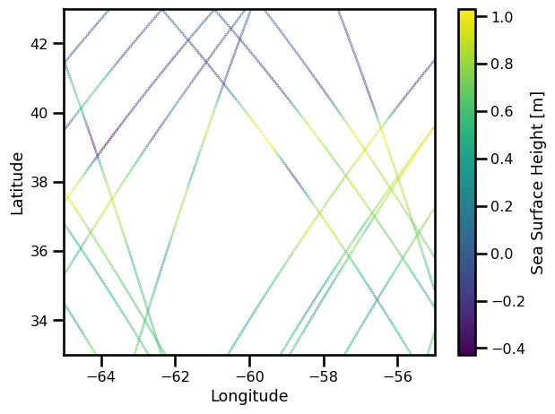
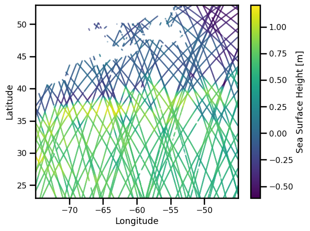

AlongTrack Data#
import autoroot
import typing as tp
from dataclasses import dataclass
import functools as ft
import numpy as np
import pandas as pd
import xarray as xr
import einops
from metpy.units import units
import pint_xarray
import xarray_dataclasses as xrdataclass
import matplotlib.pyplot as plt
import matplotlib.colors as colors
import matplotlib.ticker as ticker
from oceanbench._src.geoprocessing.validation import validate_latlon, validate_time, decode_cf_time, validate_ssh
from oceanbench._src.preprocessing.alongtrack import alongtrack_ssh
from oceanbench._src.geoprocessing.subset import where_slice
import seaborn as sns
sns.reset_defaults()
sns.set_context(context="talk", font_scale=0.7)
%load_ext autoreload
%autoreload 2
The autoreload extension is already loaded. To reload it, use:
%reload_ext autoreload
Data Challenge - 2020a - OSSE#
This data challenge looks at some simulated Altimetry data from simulations
!ls "/gpfswork/rech/yrf/commun/data_challenges/dc20a_osse/raw/dc_obs/"
2020a_SSH_mapping_NATL60_envisat.nc
2020a_SSH_mapping_NATL60_geosat2.nc
2020a_SSH_mapping_NATL60_jason1.nc
2020a_SSH_mapping_NATL60_karin_swot.nc
2020a_SSH_mapping_NATL60_nadir_swot.nc
2020a_SSH_mapping_NATL60_topex-poseidon_interleaved.nc
files_nadir_dc20a = [
"/gpfswork/rech/yrf/commun/data_challenges/dc20a_osse/raw/dc_obs/2020a_SSH_mapping_NATL60_jason1.nc",
"/gpfswork/rech/yrf/commun/data_challenges/dc20a_osse/raw/dc_obs/2020a_SSH_mapping_NATL60_envisat.nc",
"/gpfswork/rech/yrf/commun/data_challenges/dc20a_osse/raw/dc_obs/2020a_SSH_mapping_NATL60_geosat2.nc",
"/gpfswork/rech/yrf/commun/data_challenges/dc20a_osse/raw/dc_obs/2020a_SSH_mapping_NATL60_topex-poseidon_interleaved.nc"
]
def preprocess_nadir_dc20a(da):
# reorganized
da = da.sortby("time").compute()
# validate coordinates
da = validate_latlon(da)
da = validate_time(da)
# validate variables
da = da.rename({"ssh_model": "ssh"})
da = validate_ssh(da)
# # slice time period
# da = da.sel(time=slice("2012-10-22", "2012-12-03"))
# # slice region
# da = where_slice(da, "lon", -64.975, -55.007)
# da = where_slice(da, "lat", 33.025, 42.9917)
# assign coordinates
da = da.set_coords(["time", "lat", "lon"])
return da[["ssh"]]
ds_nadir = xr.open_mfdataset(
files_nadir_dc20a,
preprocess=preprocess_nadir_dc20a,
combine="nested",
engine="netcdf4",
concat_dim="time"
)
ds_nadir = ds_nadir.sortby("time").compute()
ds_nadir
<xarray.Dataset>
Dimensions: (time: 205232)
Coordinates:
* time (time) datetime64[ns] 2012-10-01T00:45:50.676369 ... 2013-09-30T...
lon (time) float64 -57.81 -57.83 -57.85 -57.87 ... -58.29 -58.31 -58.33
lat (time) float64 42.96 42.9 42.84 42.78 ... 42.82 42.88 42.94 43.0
Data variables:
ssh (time) float64 -0.0028 -0.0097 -0.0153 ... 0.244 0.2186 0.1897
Attributes: (12/26)
description: SWOT fixed grid
corresponding_grid:
title: Altimeter like data simulated by SWOT simulator
keywords: check keywords
Conventions: CF-1.6
summary: SWOT grid data produced
... ...
geospatial_lon_units: degrees_east
project: SWOT
date_created: 2018-10-12T12:39:50Z
date_modified: 2018-10-12T12:39:50Z
keywords_vocabulary: NASA
references: Gaultier, L., C. Ubelmann, and L.-L. Fu, 2016:...%matplotlib inline
fig, ax = plt.subplots()
sub_ds = ds_nadir.sel(time=slice("2012-10-22","2012-10-25"))
variable = "ssh"
pts = ax.scatter(sub_ds.lon, sub_ds.lat, c=sub_ds[variable], s=0.1)
ax.set(
xlabel="Longitude",
ylabel="Latitude",
xlim=[ds_nadir.lon.min(), ds_nadir.lon.max()],
ylim=[ds_nadir.lat.min(), ds_nadir.lat.max()],
)
plt.colorbar(pts, label="Sea Surface Height [m]")
plt.tight_layout()
plt.show()

Data Challenge - 2021a - OSE#
This data challenge looks at some real altimetry data for sea surface height.
!ls /gpfswork/rech/yrf/commun/data_challenges/dc21a_ose/test/train
dt_gulfstream_alg_phy_l3_20161201-20180131_285-315_23-53.nc
dt_gulfstream_h2g_phy_l3_20161201-20180131_285-315_23-53.nc
dt_gulfstream_j2g_phy_l3_20161201-20180131_285-315_23-53.nc
dt_gulfstream_j2n_phy_l3_20161201-20180131_285-315_23-53.nc
dt_gulfstream_j3_phy_l3_20161201-20180131_285-315_23-53.nc
dt_gulfstream_s3a_phy_l3_20161201-20180131_285-315_23-53.nc
files_nadir_dc21a = [
"/gpfswork/rech/yrf/commun/data_challenges/dc21a_ose/test/train/dt_gulfstream_alg_phy_l3_20161201-20180131_285-315_23-53.nc",
"/gpfswork/rech/yrf/commun/data_challenges/dc21a_ose/test/train/dt_gulfstream_h2g_phy_l3_20161201-20180131_285-315_23-53.nc",
"/gpfswork/rech/yrf/commun/data_challenges/dc21a_ose/test/train/dt_gulfstream_j2g_phy_l3_20161201-20180131_285-315_23-53.nc",
"/gpfswork/rech/yrf/commun/data_challenges/dc21a_ose/test/train/dt_gulfstream_j2n_phy_l3_20161201-20180131_285-315_23-53.nc",
"/gpfswork/rech/yrf/commun/data_challenges/dc21a_ose/test/train/dt_gulfstream_j3_phy_l3_20161201-20180131_285-315_23-53.nc",
"/gpfswork/rech/yrf/commun/data_challenges/dc21a_ose/test/train/dt_gulfstream_s3a_phy_l3_20161201-20180131_285-315_23-53.nc"
]
def preprocess_nadir_dc21a(da):
# reorganized
da = da.sortby("time").compute()
# validate coordinates
da = da.rename({"longitude": "lon", "latitude": "lat"})
da = validate_latlon(da)
da = validate_time(da)
# # slice region
# da = where_slice(da, "lon", -64.975, -55.007)
# da = where_slice(da, "lat", 33.025, 42.9917)
# # slice time period
# da = da.sel(time=slice("2017-01-01", "2017-12-31"))
# calculate SSH directly
da = alongtrack_ssh(da)
return da
ds_nadir = xr.open_mfdataset(
files_nadir_dc21a,
preprocess=preprocess_nadir_dc21a,
combine="nested",
engine="netcdf4",
concat_dim="time"
)
ds_nadir = ds_nadir.sortby("time").compute()
ds_nadir
<xarray.Dataset>
Dimensions: (time: 1793663)
Coordinates:
* time (time) datetime64[ns] 2016-12-01T01:07:08.844252928 ... 2...
lon (time) float64 -50.5 -50.51 -50.52 ... -74.96 -74.97 -74.99
lat (time) float64 23.03 23.08 23.14 23.2 ... 25.21 25.27 25.33
Data variables:
cycle (time) float64 11.0 11.0 11.0 11.0 ... 193.0 193.0 193.0
track (time) float64 575.0 575.0 575.0 575.0 ... 83.0 83.0 83.0
dac (time) float32 -0.0565 -0.0569 -0.0571 ... -0.0842 -0.0847
lwe (time) float32 0.003 0.003 0.003 ... -0.005 -0.005 -0.005
mdt (time) float32 0.52 0.52 0.521 0.522 ... 0.621 0.622 0.623
ocean_tide (time) float64 0.0269 0.0288 0.0307 ... 0.302 0.3033 0.3046
sla_filtered (time) float32 0.101 0.103 0.105 0.109 ... 0.039 0.048 0.059
sla_unfiltered (time) float32 0.1 0.098 0.104 0.115 ... -0.01 0.069 0.046
ssh (time) float32 0.617 0.615 0.622 0.634 ... 0.616 0.696 0.674
Attributes: (12/44)
Conventions: CF-1.6
Metadata_Conventions: Unidata Dataset Discovery v1.0
cdm_data_type: Swath
comment: Sea surface height measured by altimeter...
contact: servicedesk.cmems@mercator-ocean.eu
creator_email: servicedesk.cmems@mercator-ocean.eu
... ...
summary: SSALTO/DUACS Delayed-Time Level-3 sea su...
time_coverage_duration: P23H16M26.458585S
time_coverage_end: 2016-01-01T23:06:57Z
time_coverage_resolution: P1S
time_coverage_start: 2015-12-31T23:50:30Z
title: DT Altika Drifting Phase Global Ocean Al...%matplotlib inline
fig, ax = plt.subplots()
sub_ds = ds_nadir.sel(time=slice("2017-01-10","2017-01-15"))
variable = "ssh"
pts = ax.scatter(sub_ds.lon, sub_ds.lat, c=sub_ds[variable], s=0.1)
ax.set(
xlabel="Longitude",
ylabel="Latitude",
xlim=[ds_nadir.lon.min(), ds_nadir.lon.max()],
ylim=[ds_nadir.lat.min(), ds_nadir.lat.max()],
)
plt.colorbar(pts, label="Sea Surface Height [m]")
plt.tight_layout()
plt.show()

Data Challenge - 2023a - OSE#
This data challenge looks at the Western Mediterranean.
Data Challenge - 2023b - OSE#
This data challenge looks at the Global dataset.
#
Pangeo-Forge#
See this tutorial
TODO: Need to get the intake package working.
# from intake import open_catalog
# cat = open_catalog("https://raw.githubusercontent.com/pangeo-data/pangeo-datastore/master/intake-catalogs/ocean/altimetry.yaml")
# list(cat)